器材库 > APS及其以下画幅可换镜头数码相机 > K-5
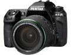
规格总览
产品类型
APS画幅可换镜头数码相机
发布日期
2010-09-20
影像规格
影像传感器
CMOS
影像传感器尺寸
23.7×15.7mm
总像素
1693万
有效像素
1628万
影像处理器
PRIME II
色彩滤镜
原色滤光镜
低通滤镜
感应器件前面，不可移动
最大解像度
4928×3264
静态图像尺寸
1)16Ｍ：4928×3264 (2)10Ｍ：3936×2624 (3)6Ｍ：3072×2048 (4)2Ｍ：1728×1152/RAW（16M）：4928×3264
静态图像格式
JPEG, RAW, RAW+JPEG
静态图像质量
压缩：JPEG - Baseline （超精细,精细, 很好, 好）；压缩：RAW （PEF）；不压缩：RAW （DNG）
画幅比
3:2
短片尺寸
(1)Full HD：1920×1080(16:9)、(2)HD：1280×720（16:9）、 (3)VGA：640×480（4:3）
短片格式
AVI
防抖系统
感光元件位移机构，最高可达4级补偿效果
除尘系统
超声波震动除尘功能
镜头和对焦
镜头卡口
Pentax AF
兼容镜头
PENTAX K-, KA-, KAF-, KAF2- and KAF3-卡口，螺口镜头（需使用转接环）；645-和67-系统镜头（需使用转接环）
对焦系统类型
TTL相位匹配11点宽区自动对焦系统（SAFOX IX+）
对焦点
11点
对焦模式
AF-S / AF-C / MF
AF辅助灯
有
手动对焦
支持
曝光控制
测光模式
中央重点测光, 多分区评价测光, 点测光
测光范围
0EV~22EV
曝光模式
P（程序自动曝光）, B门, 感光度优先, A（光圈优先自动曝光）, S（快门速度优先自动曝光）, M（手动测光曝光）
快门类型
电子控制，纵走式，焦平面快门
快门速度
1/8000 - 30 秒、B门长时间曝光；闪光同步速度：1/180秒
曝光补偿
±5EV
自动曝光锁
有
自动包围曝光
在 ±0.5EV、±1.0EV、±1.5EV、±2.0EV （0.5EV 步长）） 或±0.3EV、±0.7EV、±1.0EV、±1.3EV、±1.7EV、±2.0EV （0.3EV 步长）范围内连拍3张或5张
ISO感光度
100, 200, 400, 800, 1600, 3200, 6400, 12800, 可扩展至6400, 可扩展至80-51200
白平衡
日光, 白炽灯, 闪光灯, 阴天, 荧光灯, 阴影, CTE, 自动
自拍
12秒, 2秒
连拍
每秒7.0张，最多22张JPEG 或 8张RAW(PEF) 或 8张RAW(DNG)
闪光灯
内置闪光灯
弹出式
闪光模式
P-TTL, 高速同步, 无线遥控
闪光指数
GN 13 (ISO 100)
闪光补偿
-2 至 +1EV以1/2EV级调整
取景器/显示屏
取景器
眼平五棱取景器
取景范围
100%
取景放大倍率
0.92倍
屈光度调节范围
-2.5 ～ +1.5
LCD类型
彩色TFT LCD
LCD尺寸
3.0英寸
LCD像素
92万
视野率
100%
亮度调节级数
带亮度调整功能，带色彩调整功能
Live View
有
Live View 显示
视野率100％，放大显示（自动对焦模式下可放大2X, 4X, 6X，手动对焦模式下可放大2X, 4X, 6X, 8X, 10X）可显示网格线
Live View 对焦模式
对比度检测 + 脸部检测 / 对比度检测 / 相位差检测
文件输入/输出
存储卡
SD/SDHC
数据接口
USB2.0
视频/音频接口
AV 输出, HDMI 输出, MIC 输入, Video 输出 (NTSC/PAL)
电源
电池
可充电锂离子电池D-LI90
续航能力
可拍摄980张照片
外接电源
AC适配器（可选配）
机身规格
材质
骨架采用高强度的不锈钢合金，镁金属合金外壳
颜色
黑色
尺寸
131×97×73mm
重量
660g
其它
附件
D-LI90锂离子电池、电池充电组
备注
77分区分割测光；HDR（高动态范围）功能
chencan2019-09-05 00:354.25 分
操作性 5.00功能性 4.50美观性 5.00趣味性 4.00耐用性 4.00性价比 5.00解像力 3.00色彩还原 3.50
hzsimon2016-10-20 09:164.75 分
操作性 5.00功能性 4.50美观性 5.00趣味性 4.50耐用性 5.00性价比 5.00解像力 4.50色彩还原 4.50
cybertron2015-07-15 03:204.75 分
操作性 4.50功能性 5.00美观性 5.00趣味性 5.00耐用性 4.50性价比 5.00解像力 4.50色彩还原 4.50
牵驴走单骑2014-02-22 16:084.94 分
操作性 5.00功能性 5.00美观性 5.00趣味性 5.00耐用性 4.50性价比 5.00解像力 5.00色彩还原 5.00
十八刀2013-07-12 22:075 分
操作性 5.00功能性 5.00美观性 5.00趣味性 5.00耐用性 5.00性价比 5.00解像力 5.00色彩还原 5.00
laogan1012013-02-01 17:474.75 分
操作性 5.00功能性 5.00美观性 5.00趣味性 4.00耐用性 5.00性价比 4.50解像力 4.50色彩还原 5.00
arondes2012-11-07 05:224.81 分
操作性 4.50功能性 5.00美观性 5.00趣味性 4.50耐用性 5.00性价比 5.00解像力 5.00色彩还原 4.50
骊泉居士2012-10-15 23:004.56 分
操作性 5.00功能性 4.50美观性 4.50趣味性 5.00耐用性 4.50性价比 5.00解像力 4.00色彩还原 4.00
gentbreeze2012-07-30 21:284.5 分
操作性 4.00功能性 4.50美观性 4.50趣味性 4.00耐用性 4.50性价比 5.00解像力 4.50色彩还原 5.00
qz8242012-07-09 16:394.69 分
操作性 5.00功能性 4.50美观性 4.50趣味性 4.50耐用性 5.00性价比 4.50解像力 4.50色彩还原 5.00
产品图 / 样片
K-5
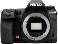
K-5
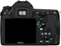
K-5
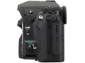
K-5
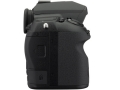
K-5
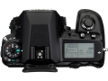
K-5
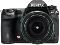
K-5
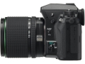
K-5
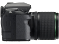
K-5
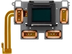
K-5
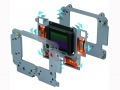
K-5
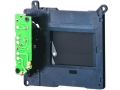
K-5
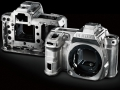
K-5
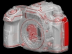
K-5
评测 / 相关文章
该产品暂无存档的评测文章
相关文章
- ［试用］一个年轻宾得“器材佬”的三年折腾时光 （存档）
- ［试用］宾得K-5鸟类俱乐部 （原站已下线）
- ［资讯］解决宾得数码单反机反光板乱跳问题 （原站已下线）
- ［试用］实拍对比宾得K-5与K-5IIs （存档）
- ［试用］宾得K5拆低通改红外天文机 （原站已下线）
- ［试用］宾得K5 感觉挺好 （原站已下线）
- ［影像］宾得风光—K5+DA16-50mm （存档）
- ［试用］剖析K5反光板下不来、快门连续触发的故障 （原站已下线）
- ［资讯］宾得K-5银色特别版本月发售 限量1500台 （原站已下线）
- ［影像］泡菜试机 宾得K-5使用感受 （原站已下线）
- ［试用］玩宾得玩的就是心情 （原站已下线）